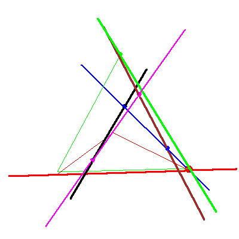

The problem of four lines in P3


The problem of four lines in P3 |
|
|  |
In the fourth stages of the specialization sequence, nothing happens to either solution lines. For the blue solution, this is the case (yes,no) in Table2/Figure 8 of GLR, and for the magenta solution, it is a case of (no,no). The movement of the leftmost red checker for the blue solution reflects the moving point falling into the fixed point. |
 
|